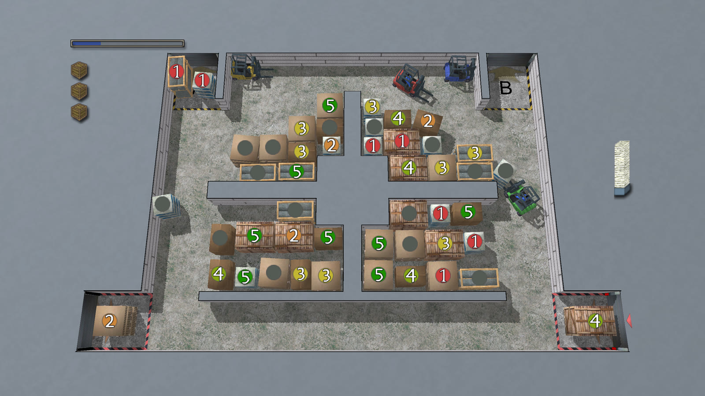
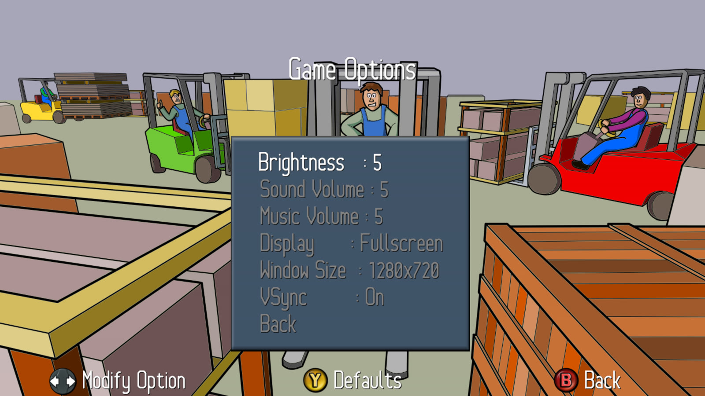

What's the game about?
You and up to three friends each drive a forklift in a busy warehouse. Goods keep arriving through the gates, and every one of them has a deadline: a number shows how many periods are left before it has to go out, and a letter shows which gate it must leave through.
Stack incoming goods out of the way, keep the gates clear, and get orders out in time. Every missed delivery costs a life, and a blocked gate when a delivery arrives costs one too. Lose all your crates and the map is failed.
It's easy to learn and the controls are simple, but it gets frantic fast. Shared space is the real puzzle.
This is an unofficial port of the Xbox Live Indie Games release. Not made by Stolpskott Studios, but released with the original developer's permission. See bottom of the page for more information.
- 1–4 local players, co-op
- 100 maps, all playable in co-op
- 4 difficulties, from Easy to Master
- Tutorial included

While Storage Inc was likely not a game known by most, it still left a mark. Phil Duncan, co-founder of Ghost Town Games, played it with his friends at lunch, and it went on to influence their co-op hit Overcooked:
“It was a deceptively simple premise, one which really sparked something in our group and which influenced Overcooked in a number of different ways.”
Phil Duncan, “Why I Love: Storage Inc.”, GamesIndustry.biz
You need a gamepad
Driving the forklifts requires a controller, one per player. Xbox-style controllers work best, since the game shows Xbox buttons. Menus also work with the keyboard (arrow keys, Enter, Esc).
Press Start to begin as the main player. On the Game Setup screen, the other players press X to join. During a map, pressing Start on an unused controller joins the game.
What's new since the Xbox version
The game plays just like the original. The new parts are the display options a PC needs:
- Fullscreen or windowed, switchable in Game Options or with Alt+Enter.
- Resolution settings. Pick the window size you want instead of the fixed 720p of the Xbox.
- 3D at your resolution. The warehouse, forklifts and goods are rendered at full resolution, so they stay sharp on large screens. The 2D artwork (menus, HUD, fonts) is upscaled from the original.
- VSync on or off.
Xbox Live profiles and storage devices are replaced by simple local saves.

Download
Free, and it will always be free. Unpack the archive and run StorageInc. Nothing else to install.
MacOS Intel and Linux builds are untested. The macOS build is unsigned: if it won't start, run xattr -dr com.apple.quarantine StorageInc on the unpacked folder. All releases are on GitHub.
Support the original developer
Storage Inc was made by Stolpskott Studios, who kindly allowed this port to be released, on one condition: nobody makes money from it. That means no paid downloads, no ads, and no donations. If you enjoy it, please give back to the developer instead:
About this port
The original game was written in C# with Microsoft's XNA. This port decompiles it, converts its Xbox content (textures, models, shaders and audio) to PC formats, and runs it on FNA, an open-source reimplementation of XNA. The porting work was done with the help of AI (Claude).
The source code and tools are on GitHub. The repository contains no game content; building from source requires your own copy of the original Xbox 360 game.